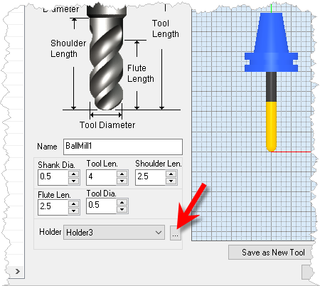
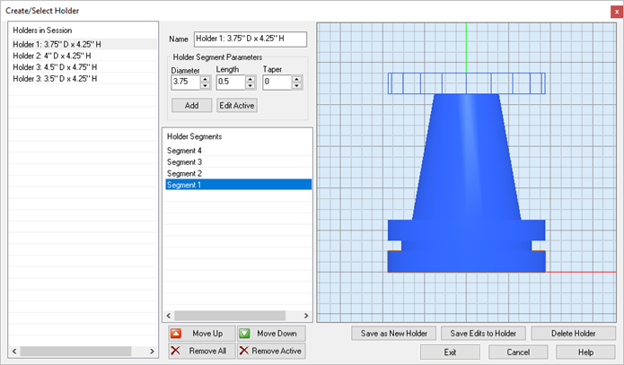

Tool Holders are defined separately from cutting tools. From the Create/Select Tool dialog you can select a Holder to assign it to the active tool. To create or edit your holders pick the  button to display the Create/Select Holder dialog shown below. Holders are save with your tool library
button to display the Create/Select Holder dialog shown below. Holders are save with your tool library
To display the Create/Edit Tool Holder dialog pick the  Dialog Box: Create/Edit Tool Holders |
Use this dialog to create your tool Holders.  Dialog Box: Create/Edit Tool Holders Holders in Session On the left side is the Holders in Session list. When you pick the Save as New Holder button, the holder is added to the Holders in Session list. Holder Segment Parameters Each Holder must have a unique name. Each Holder segment is defined by it's Diameter, Length and Taper angle. Selecting the Add button adds the segment to the Holder Segments list. Select a segment from the list and then pick the Edit Active button to edit that segments parameters. Holder Segments Tool Holders are defined by segments. In the Holder preview shown in the dialog above we see that Holder 3 has 4 segments. You can select a segment and edit its parameters. Use the Move Up and Move Down buttons below the Holder Segments list to adjust the sequence of the segments. Remove All deletes all segments in the list. Remove Active deletes the currently select segment. Holder Preview A preview of the Holder is shown on the right. When you select a segment it is previewed as a wireframe at the top of the holder. This preview is dynamically updated when you edit its Diameter, Length and/or Taper dimensions. Then selecting the Edit Active button updates that segment and the preview is also updated. Save As New Holder When you are done editing segments for a new holder and you are satisfied with the preview, select the Save as New Holder button to create the holder and add it to the Holders in Session list on the left. Save Edits to Holder To edit an existing Holder, select it from the Holders in Session list from the left. Then edit it's segments as desired changing dimensions, etc. and then pick the Save Edits to Holder button. Your edits are not save unless you pick this button. Delete Holder To delete a holder, select it from the Holders in Session list and then pick the Delete Holder button. |